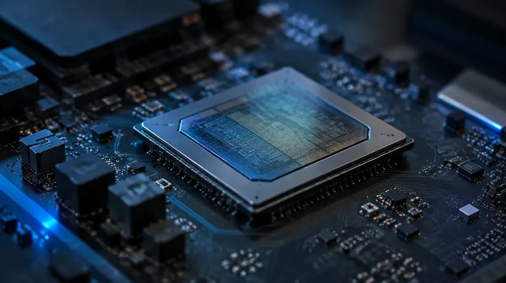
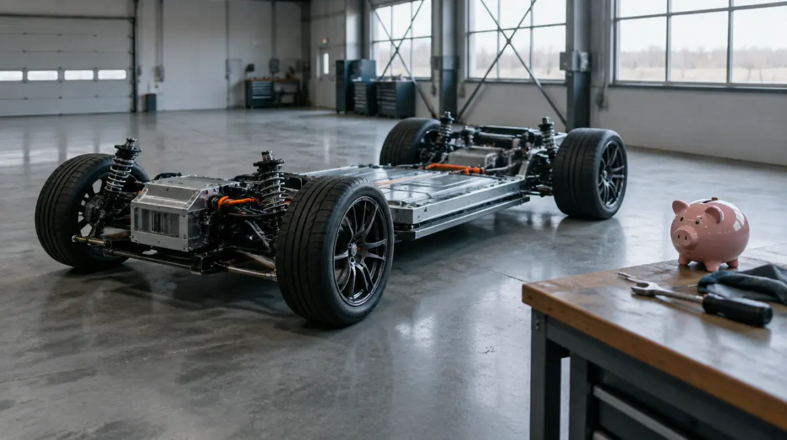
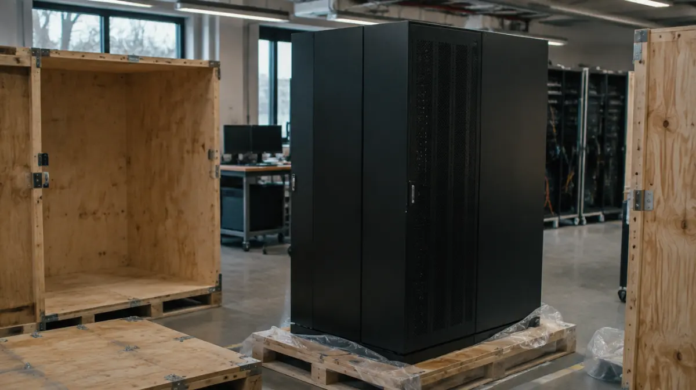
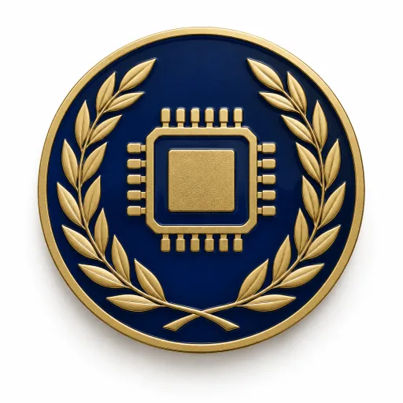

MOCKUP · new art for review, not on the site yet
New art: realistic set
Showing the more realistic versions.
Sector banners (ESPN version)
sector-aerospace
sector-aisector-autossector-energysector-financesector-healthsector-industrialssector-luxurysector-mediasector-othersector-realestate
Billionaire Life decision scenes
bill-gates-1bill-gates-2bill-gates-3bill-gates-4bill-gates-5elon-musk-1elon-musk-2
elon-musk-3elon-musk-4elon-musk-5jeff-bezos-1jeff-bezos-2jeff-bezos-3jeff-bezos-4jeff-bezos-5jensen-huang-1jensen-huang-2
jensen-huang-3jensen-huang-4jensen-huang-5larry-ellison-1larry-ellison-2larry-ellison-3larry-ellison-4larry-ellison-5mark-zuckerberg-1mark-zuckerberg-2mark-zuckerberg-3mark-zuckerberg-4mark-zuckerberg-5michael-dell-1michael-dell-2michael-dell-3michael-dell-4michael-dell-5warren-buffett-1warren-buffett-2warren-buffett-3warren-buffett-4warren-buffett-5
Academy
crest-bill-gatescrest-elon-muskcrest-jeff-bezos
crest-jensen-huangcrest-larry-ellisoncrest-mark-zuckerbergcrest-michael-dellcrest-warren-buffettdiploma
Casino mystery player (stays cartoon)
casino-silhouette